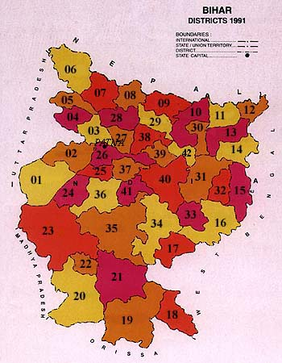

| 01-Rohtas 02-Bhojpur 03-Saran 04-Siwan 05-Gopalganj 06-Pashchim Champaran 07-Purba Champaran 08-Sitamarhi 09-Madhubani 10-Saharsa 11-Araria 12-Kishanganj 13-Purnia 14-Katihar 15-Sahibganj 16-Dumka 17-Dhanbad 18-Purbi Singhbhum 19-Pashchimi Singhbhum 20-Gumla 21-Ranchi 22-Lohardaga 23-Palamu |
 | 24-Aurangabad 25-Jehanabad 26-Patna 27-Vaishali 28-Muzaffarpur 29-Darbhanga 30-Madhepura 31-Bhagalpur 32-Godda 33-Deoghar 34-Giridih 35-Hazaribag 36-Gaya 37-Nalanda 38-Samastipur 39-Begusarai 40-Munger 41-Nawada 42-Khagaria |